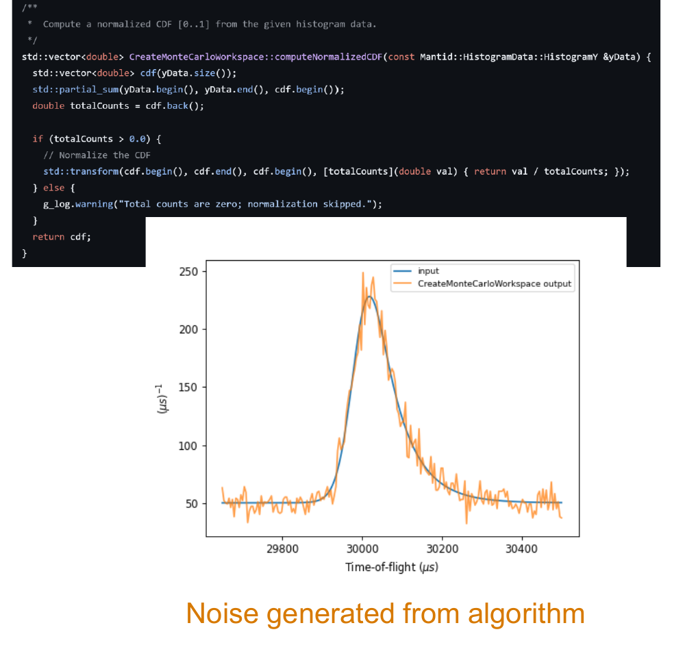
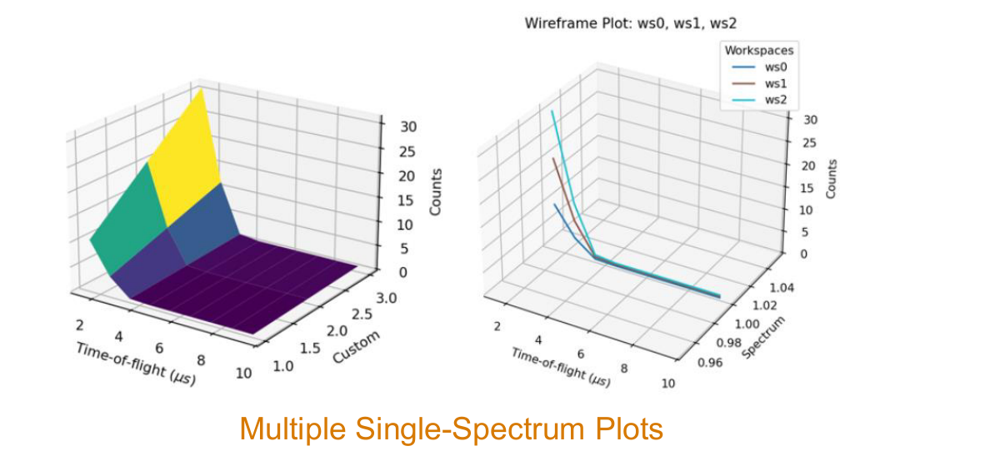

Contributing C++ and Python to the open-source framework that processes neutron and muon scattering data at facilities across the world.
Mantid is the open-source framework that most of the world's major neutron and muon scattering facilities use to reduce, process, and visualise their experimental data. Under the hood it's a Python library backed by a high-performance C++ core, paired with MantidWorkbench, a full graphical environment for scripting, plotting, and instrument visualisation.
I worked on it as part of my placement at the ISIS Neutron and Muon Source (Harwell Campus, Oxfordshire), one of the world's leading pulsed neutron and muon facilities and the UK's home for Mantid development. ISIS is one of several facilities worldwide that build and rely on it.
Scientists and developers at ISIS write custom fitting functions to model their experimental data, but testing a fitting function properly means throwing realistic, noisy data at it, not just a clean textbook curve. I was asked to build a tool for exactly that: CreateMonteCarloWorkspace, a C++ algorithm that generates a statistically realistic synthetic workspace from any real input spectrum.
The approach is Monte Carlo sampling. The algorithm treats the input spectrum as a probability density function, integrates it into a normalised cumulative distribution function, then repeatedly draws a uniform random number between 0 and 1 and maps it back through that CDF to pick a bin. Do that enough times and the output reproduces the shape of the original data, complete with the kind of statistical noise you'd actually see on an instrument, while guaranteeing correct event proportions across every bin and full reproducibility from a fixed random seed.

Each random draw maps back through the CDF with std::lower_bound, a binary search, rather than walking the array from the start. That's the difference between O(log n) and O(n) per sample, which matters once you're generating events by the million.
Output uncertainties are computed as √N per bin, the correct standard deviation for counting statistics, so the simulated workspace behaves like real instrument data in a downstream fit instead of just looking right on screen.
If the caller doesn't specify how many Monte Carlo events to generate, the algorithm derives a sensible number automatically from the integral of the input spectrum, so it works out of the box without anyone needing to guess a magnitude.
A small selection from the rest of my placement, maintaining and improving a production scientific codebase used daily by researchers, not the full list.
Added support for surface, contour, and waterfall plots built from multiple single-spectrum workspaces at once, instead of requiring users to plot them one at a time.
Updated the entire plotting codebase across the version bump, and harmonised the workbench and mantidworkbench entry points so both launch consistently.
Fixed a bug where dragging a plot legend outside the window would lose it permanently, improved keyboard tabbing order across multiple windows, and tracked down a malformed XML script that was crashing the editor outright.
